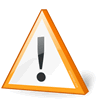

The track and altitude display
Once the track has been saved to the output .igc file, then if
more than one track fix point was found within the task window then FRDL displays
a basic outline of the track, its altitude profile and some statistics.
If no track was found then the display will show that no track points were
found in the task window. An igc file is still written so the analysis people
know that the logger has actually been downloaded. It will contain all
the appropriate information in it, except of course no track points.
|
The track display is intended as a 'quick and dirty' indication of what has
been saved and NOT any kind of definitive flight analysis which should
always be done in a dedicated flight analysis program (eg MicroFlap). |
 |
The track display is probably good enough for both the organizer and the pilot
to clearly understand what was recorded by the logger so it can be immediately
returned to him.
It indicates poor reception which can be improved by the pilot placing the
logger in a better place in his aircraft next time.
A Blue track line indicates normal good 3d reception.
A Red track line indicates poor 2d reception.
A Grey track line indicates unknown reception.
It may also alert the organizer to important penalties such
as outlandings which merit further detailed investigation.
Gaps in a track are shown whenever there is no data for a period of 30 seconds
or more.
The displayed start and end times are the first and last log file entries which
FRDL found within the task window. They are NOT takeoff or landing times.
The max and min altitude are what FRDL found from amongst all log file entries
within the task window, and may not indicate max and min altitudes flown since
GPS receivers can easily generate false altitudes particularly whan they are starting up
and when they have poor reception. Even with good reception, GPS altitude can easily
show an error over true altitude of 500ft or more, so it should always be used in
flight analysis as nothing more than a general indicator. For example, the altitude
profile of a flight may clearly show an outlanding, but before being penalized this
should always be further investigated by looking at such things as the distance between
fixes or speed at the location of the supposed outlanding.
|
An entirely Grey track line in both displays and
a completely flat track in the altitude profile display indicates the logger
is set in the wrong mode and is NOT recording either altitude or fix validity.
It is up to the organizer to decide whether this constitutes a valid track as it
will depend on the context of the task, but it is strongly advised the logger is
adjusted so it records these paramaters in future. See the instructions for the
particular logger type. |
 |